Our Success
Selected Transactions
A curated selection of completed transactions across our five industries. Tombstones marked Featured are signature Mid-Market transactions.
Nashville-based crane rental operator serving the Southeast for more than 35 years.
Industrial
Supplier of precision fabrication, industrial coating, assembly and logistics services to multinational vehicle and equipment manufacturers.
Industrial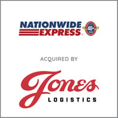
Tennessee-based provider of dedicated trucking, warehousing, 3PL and recycling transportation across eight states.
Industrial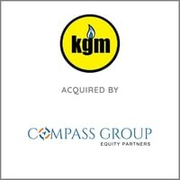
Energy-sector business (KGM) sold to St. Louis-based private equity firm Compass Group Equity Partners.
Industrial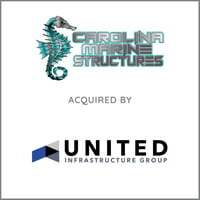
Commercial waterfront construction contractor specializing in boat ramps, bridges, dredging and shoreline restoration.
Industrial
Producer of portable calibration gas mixtures used to verify gas-detection and analytical instrumentation.
IndustrialDesigner and manufacturer of instrumentation, wireless sensing and telemetry systems for satellites, launch vehicles and missile-defense programs.
Industrial · Technology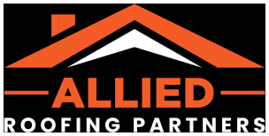
Family-owned Texas exterior contractor providing residential and multifamily roofing, siding, windows and gutters since 1983.
IndustrialLaredo-based single-source logistics provider offering transportation, logistics and customs clearance worldwide.
Industrial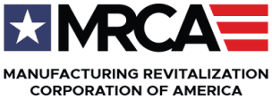
ISO-certified CNC manufacturer of precision-machined components for the construction and agricultural industries.
Industrial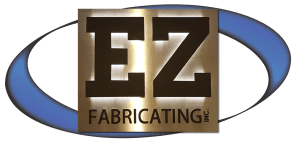
Acquired ByMinnesota precision metal fabricator offering laser cutting, machining, welding, tube bending and finishing.
IndustrialGulf Coast provider of industrial maintenance, capital projects, turnarounds and fabrication services.
Industrial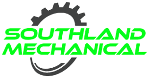
Acquired ByHouston provider of commercial and industrial HVAC design-build, retrofit, service and maintenance for mission-critical facilities.
Industrial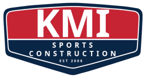
Acquired ByAustin-based one-stop provider of indoor and outdoor sports surfacing for schools, municipalities and sports complexes.
IndustrialThe world's leading manufacturer of civilian submersibles.
IndustrialVacuum pump sales, repair and maintenance provider serving electronics and semiconductor customers in Northern California.
IndustrialAerospace metal-finishing specialist and leader in electroless nickel application, with AS9100 and Nadcap accreditations.
Industrial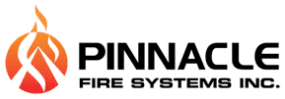
Acquired By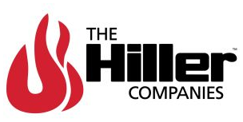
Provider of fire alarm and life-safety systems to commercial and industrial customers across the Southeast.
Industrial · Business Services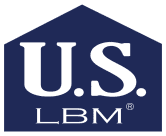
Dallas–Fort Worth supplier of doors, hardware and building products, formerly operating as Nix Door & Hardware.
IndustrialDesigner and manufacturer of high-reliability microelectronics, including thick-film ceramic substrates and hybrid circuits.
Industrial · Technology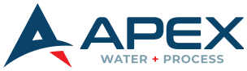
Water treatment chemical producer providing custom formulations and plant automation equipment for more than 30 years.
Industrial Acquired By
Acquired By
Pioneer in recycling radioactive materials through a national mail-back program for smoke alarms and exit signs.
IndustrialTexas waste-oil recycling and removal company serving manufacturing facilities and restaurants.
Industrial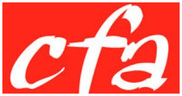
Acquired ByCivil engineering firm providing design, land planning, surveying, permitting and construction administration services.
Industrial · Business ServicesIndependent consultancy supporting operations, maintenance and asset management in power generation and process facilities.
Industrial · Business Services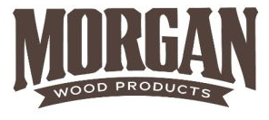
Acquired ByColumbus, Ohio-based pallet broker serving customers across 41 states and provinces.
Industrial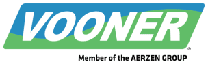
Acquired By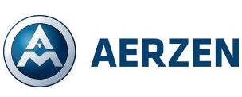
Manufacturer of vacuum pumps, vacuum system components and dewatering systems for paper mills.
Industrial Acquired By
Acquired By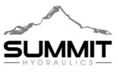
Phoenix-based supplier of water distribution equipment for the commercial water truck industry.
IndustrialFlorida distributor of hoses and hydraulic products operating five full-service hydraulic sales and repair shops.
Industrial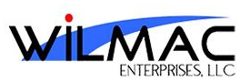
Acquired ByFull-service intermodal transportation provider with interchange agreements across major railroads and steamship lines.
Industrial Acquired By
Acquired By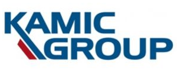
Manufacturer of custom magnetic components, including transformers, toroids, inductors and chokes.
Industrial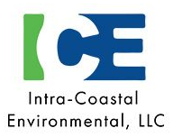
Acquired BySoutheastern provider of environmental, industrial and emergency response services.
IndustrialHouston specialty export crating and packing company serving the energy and logistics industries.
Industrial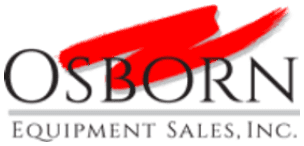
Acquired ByManufacturer's representative of dry-process material handling equipment across Oklahoma, Arkansas and the Texas Panhandle.
Industrial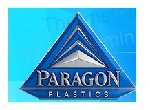
Acquired ByThermoforming OEM producing custom plastic components for marine, industrial, bus and aerospace markets.
Industrial Acquired By
Acquired ByPlastic recycling company diverting post-consumer and post-industrial waste from landfills.
Industrial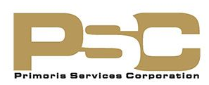
Florida provider of trenchless sewer and storm pipe solutions, pipe cleaning, testing and CCTV inspection.
Industrial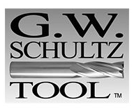
Acquired By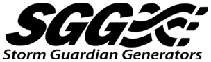
Acquired By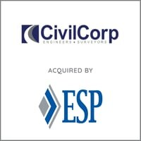
Texas engineering firm specializing in transportation and public works infrastructure.
Business Services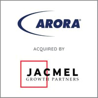
Infrastructure-focused planning, design, program management and technology services firm serving government clients.
Business Services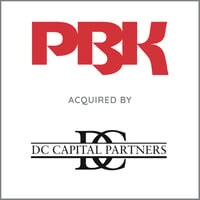
One of the largest US-based architecture firms, with 500+ architects, engineers and professionals.
Business Services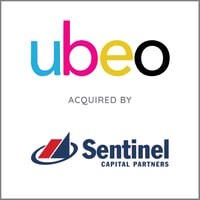
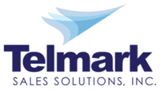
Acquired BySales, marketing and order-processing brokerage serving consumer packaged goods brands across retail channels.
Business Services · Consumer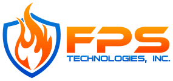
Acquired By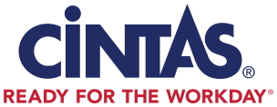
Oklahoma City provider of fire protection and safety systems design, installation, maintenance and 24/7 emergency service.
Business Services · Industrial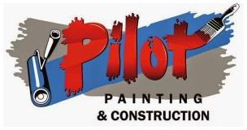
Acquired BySouthern California painting and reconstruction company (Pilot Painting) serving HOA and multifamily communities for 50+ years.
Business Services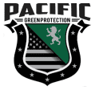
Acquired By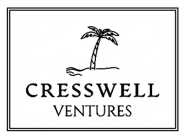
Private security provider (Echelon Protective Services) offering armed and unarmed protection services.
Business Services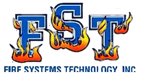
Acquired ByArkansas full-service fire sprinkler contractor providing installation, inspection, maintenance and renovation.
Business Services · IndustrialTechnology consultancy specializing in E-Rate consulting, low-voltage design and project management for schools and libraries.
Business Services · Technology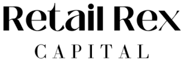
Promotional products and marketing services provider with a portfolio of more than 300,000 items.
Business Services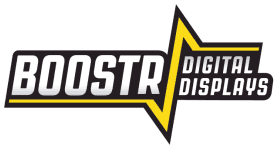
Acquired By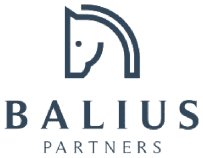
Family business providing indoor and outdoor display assemblies for school and university sports programs.
Business ServicesManagement consulting firm specializing in digital strategy and technology-driven transformation.
Business Services · TechnologyNebraska engineering firm focused on transportation, bridge design, surveying and hydraulics.
Business ServicesEngineering and architecture technology firm (myBIMteam) producing 3D building asset models through reality capture.
Business Services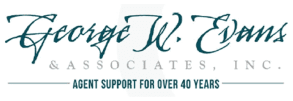
Acquired ByManaging General Agent and insurance wholesale agency supporting independent agents and brokers.
Business Services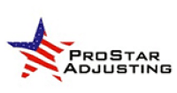
Acquired ByFamily-owned independent insurance claims adjusting agency.
Business ServicesFull-service staffing agency placing temporary and permanent hourly personnel in industrial, professional and medical roles.
Business ServicesTechnical and financial search and staffing firm placing engineering, geoscience, accounting and finance professionals.
Business ServicesPioneering Arizona cannabis testing laboratory offering advanced analytical and quality testing.
Business ServicesAward-winning transformation and automation consulting firm focused on people, process and technology.
Business Services · Technology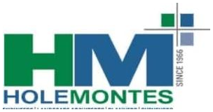
Acquired ByFlorida full-service civil engineering, consulting and design firm serving public and private clients.
Business ServicesColorado full-service independent property and casualty insurance brokerage.
Business Services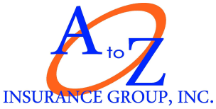
Acquired By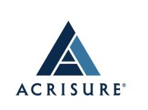
Texas independent insurance agency specializing in commercial trucking policies.
Business Services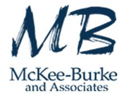
Acquired ByHouston talent and HR solutions firm covering recruiting, executive search, talent development and career transition.
Business Services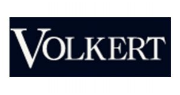
Louisiana civil engineering and surveying firm specializing in public works.
Business ServicesIndependent financial planning firm advising high-net-worth individuals and corporate clients.
Business Services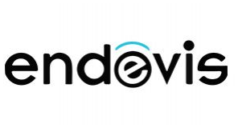
Acquired ByProfessional contract staffing, direct placement and recruitment process outsourcing firm operating across the U.S.
Business ServicesFlorida engineering firm focused on forensic, civil, structural and design/build services.
Business ServicesInsurance adjusting and appraisal firm covering property, casualty, transportation and agricultural claims.
Business ServicesCentral Texas land development consultancy providing civil engineering, utility and infrastructure design.
Business Services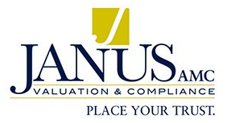
Acquired ByAppraisal management company providing property valuation services to mortgage lenders, banks and credit unions.
Business Services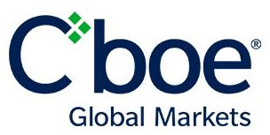
Provider of advanced analytics and execution tools for professional traders.
Business Services · Technology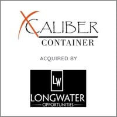
Texas provider of steel shipping and storage containers with custom fabrication capabilities.
Consumer · IndustrialPermian Basin collision repair centers (Platinum Collision and Pat Gray Collision).
ConsumerPortland, Maine importer, processor and distributor of fresh and frozen seafood.
ConsumerPioneer in durable, eco-conscious buffet and food presentation solutions.
Consumer Acquired By
Acquired ByValue-added wholesale distributor of premium grills and outdoor kitchen appliances.
ConsumerGarage door dealer providing installation, repair and maintenance across Indiana and Illinois.
ConsumerDesigner and omnichannel retailer of women's golf, tennis and pickleball accessories.
Consumer Acquired By
Acquired ByE-commerce supplier of commercial coffee equipment, parts and services since 1993.
ConsumerFlorida distributor of foodservice equipment and supplies.
ConsumerOutsourced B2B sales and account management partner to consumer packaged goods companies.
Consumer · Business Services Acquired By
Acquired By
Wholesale food distributor of eggs, butter, cheese, dairy and manufacturing ingredients.
ConsumerKosher-certified wholesale bakery serving hotels, theme parks, hospitals and restaurants across Florida since 1977.
ConsumerNew York confectionery innovator known for its edible and ready-to-bake cookie doughs.
ConsumerIndustry-leading supplier of kayak, paddle sports and marine accessories.
ConsumerNew Mexico operator of vehicle wash, detailing and quick-lube locations (Rain Tunnel Car Spa).
ConsumerFull-service nutritional supplement manufacturer covering product development through fulfillment.
ConsumerManufacturer of custom embroidered and printed flags for the Department of Defense and commercial customers.
Consumer · IndustrialCalifornia-based clean, all-natural wellness and beauty brand.
ConsumerEast Tennessee equipment rental and mini-storage business with a 28-year operating history.
Consumer · Industrial
Owner of leading fishing-lure brands Gene Larew, Bobby Garland and Crappie Pro.
ConsumerDistributor serving 500+ farm equipment dealers across the Southeast for more than 85 years.
Consumer · IndustrialConsumer food business acquired by Rosser Capital Partners.
Consumer
Operator of six urgent care clinics across Central Florida.
Healthcare
Leading provider of staffing and services to the U.S. perfusion industry.
Healthcare · Business Services
Orthopedic manufacturer of cold-therapy gel packs and compression wraps supplying 340+ hospitals.
Healthcare
Patent-holding dental device brand behind ReLeaf® aerosol-reduction evacuator attachments.
Healthcare · Consumer Acquired By
Acquired By
Distributor of emergency medical supplies and equipment to EMS, fire, law enforcement and military customers.
HealthcareOhio provider of secure pharmaceutical and healthcare supply delivery to long-term care pharmacies.
Healthcare · Industrial Acquired By
Acquired By
Manufacturer of ultrasonic cleaning systems and solutions for surgical instrument reprocessing.
Healthcare Acquired By
Acquired By
Louisiana provider of home infusion therapy services.
Healthcare Acquired By
Acquired By
Texas therapeutic optometry and glaucoma practice with a 25-year history.
HealthcareLeader in human-factors engineering and user-centered medical product design.
Healthcare · Business Services Acquired By
Acquired By
Florida multi-specialty medical group offering primary, urgent and specialty care.
HealthcareClinical pathology laboratory providing cancer diagnostic testing.
HealthcareMaker of anesthesia circuit filters and respiratory humidification products.
HealthcareHighly ranked urgent care provider serving the Greater Mobile, Alabama market.
Healthcare Acquired By
Acquired By
Pediatric therapy provider serving children with special needs across Kentucky and Indiana.
Healthcare Acquired By
Acquired By
Hybrid community and nationwide mail-order pharmacy focused on affordable prescription drugs.
Healthcare Acquired By
Acquired By
Clinical research site conducting Phase II–IV trials for 400+ biotech, pharmaceutical and device sponsors.
Healthcare Acquired By
Acquired By
Emergency medical services provider acquired by Priority Ambulance, backed by Enhanced Equity Funds.
Healthcare Acquired By
Acquired By
 Acquired By
Acquired By
 Acquired By
Acquired By

Computer-Rx, a pharmacy software platform for community pharmacies; merged with Rx30.
Technology · Healthcare
Rx30, a leading developer of pharmacy management software; strategic equity investment from GTCR.
Technology · HealthcareEnterprise email signature and communications governance platform.
TechnologySoftware design and development firm specializing in iOS, Android, Mac and backend development.
TechnologyMail-tracking and direct-mail marketing analytics software provider.
TechnologyHybrid IT services partner to K-12 schools with high recurring revenue.
TechnologyProvider of training and simulation solutions to the U.S. military and government agencies.
TechnologyGerman developer of automatic optical inspection systems for electronics manufacturing.
Technology · Industrial Acquired By
Acquired ByClinical SaaS provider of the MEDICI® platform supporting hospital antimicrobial stewardship.
Technology · HealthcareIT consulting and software development firm delivering Microsoft-stack collaboration solutions.
TechnologyCustom software development firm building digital solutions for companies with large distributed workforces.
TechnologyDeveloper of mobile field service management software for the property services industry.
TechnologyBusiness management software for the embellished products industry, with 29 years of operating history.
TechnologyFull-service IT provider serving the Southeast since 1981.
TechnologyDesktop management software that helps IT teams manage and secure Windows environments.
TechnologySpecialized cybersecurity and IT staffing firm.
Technology · Business ServicesVertical software provider of loan origination and servicing solutions.
Technology · Business ServicesLeader in CAD/CAM software for CNC milling, turning, routing and wire EDM.
TechnologyImage and data conversion and migration technology for the financial services industry.
Technology · Business ServicesAustin developer of database performance tuning software.
TechnologySoftware company acquired by Swiftcurrent Holdings, an affiliate of ESW Capital.
TechnologySpanish software company acquired by Cendyn, backed by Accel-KKR.
TechnologyTelecommunications provider acquired by Responsive Technology Partners.
TechnologySource: Benchmark International transaction announcements and benchmarkintl.com/about/our-success, as of October 2026. Selected transactions shown.
Confidential. No pressure. No commitments.
It All Starts With a Conversation
Our first step is always a confidential conversation exploring your goals, your company, and your options.
Call to speak with an M&A expert at 813-771-6675